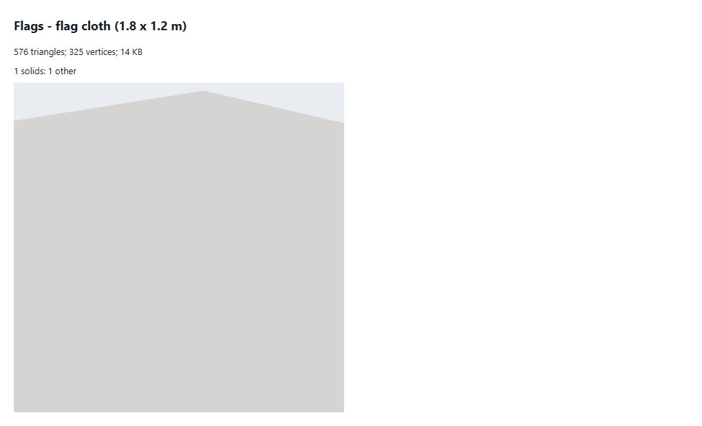

flag cloth 1.8 x 1.2 m
What to change
- Budget: about 64 triangles (576 today, 9.0 times the budget): a cloth of 8 x 4 quads: the wave stays smooth in the vertex shader.
- 8 x 4 quads.
- Picture: nothing visible in the isolated shot (the object draws off its own transform or under the ground plane); check it is drawn at all where placed.
- No level of detail: add ~50% levels (meshoptimizer simplify, weld first) and an impostor or nothing past a few pixels.
- 32 bytes a vertex: quantize (position 3 x int16, normal as 2 x int8 octahedral, colour 4 x uint8): about 12-16 bytes (KHR_mesh_quantization).
- Triangles
- 576
- Vertices
- 325
- Levels
- L0 576
- Memory
- 14 KB (geometry 14 KB, textures 0 KB)
- Per vertex
- 32 B: position:3xFloat32=12B normal:3xFloat32=12B uv:2xFloat32=8B aPattern/instance:1xFloat32=4B aLength/instance:1xFloat32=4B aC0/instance:3xFloat32=12B aC1/instance:3xFloat32=12B aC2/instance:3xFloat32=12B
- Drawn as
- instanced
- Material
- MeshStandardMaterial "flag-cloth" [flag-cloth-v1] (double-sided, roughness 0.85, metalness 0, opacity 1)
- Shader
- patched built-in flag-cloth-v1 · wind sway (vertex); wave (vertex)
- Solids
- 1 solids: 1 other
- Hidden triangles
- 0
- Shadow
- -
- Source
src/render/buildings/flagLayer.ts (createFlagLayer, set)(kit)- Notes
- the same cloth for every flag: its 14 patterns and colours drawn by the shader, its wave moved by the wind in the vertex shader